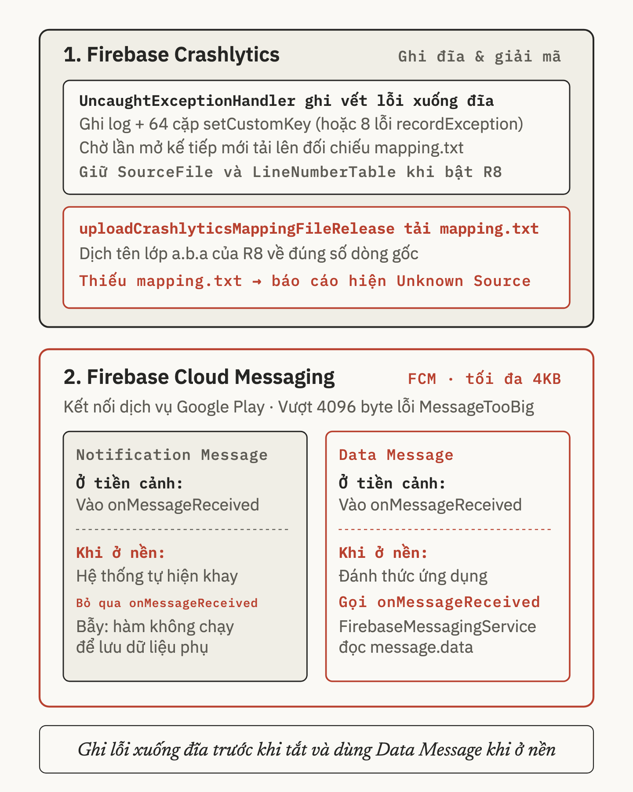

Crashlytics & FCM
Bản 30 giây
Khi ứng dụng tới tay người dùng, bạn không thể cắm cáp đọc log lúc máy sập hay bắt máy thức dậy hỏi tin. Firebase Crashlytics tự động ghi vết lỗi vào bộ nhớ máy ngay giây phút ứng dụng sập rồi gửi kèm sổ giải mã về cho bạn. Còn Firebase Cloud Messaging (FCM) mượn kết nối ngầm sẵn có của hệ thống để đánh thức ứng dụng và trao thông báo đẩy đỡ tốn pin.
Cần biết trước
Vấn đề buộc nó ra đời
Ở những năm đầu của Android, muốn nhận tin từ máy chủ, mỗi ứng dụng phải tự mở dịch vụ ngầm giữ kết nối riêng. Hàng chục ứng dụng cùng giữ kết nối khiến radio mạng không bao giờ nghỉ, làm máy nóng và tụt pin nhanh chóng. Ngược lại, khi ứng dụng sập trên máy khách, người dùng chỉ bấm tắt hộp thoại. Lập trình viên vì thế mù tịt về lỗi ngoài thực tế.
Google ra mắt Google Cloud Messaging rồi nâng cấp thành Firebase Cloud Messaging (FCM) tại Google I/O tháng 5 năm 2016. Dịch vụ này gom thông báo đẩy của mọi ứng dụng vào một kết nối chung. Tháng 1 năm 2017, Google mua lại Fabric (chứa Crashlytics, ra đời năm 2011) từ Twitter. Công cụ này được tích hợp thành Firebase Crashlytics để thu thập và giải mã báo cáo sập ứng dụng.
Nó thực sự là cái gì
Crashlytics không gửi báo cáo qua mạng ngay khoảnh khắc ứng dụng đang sập. FCM cũng không phải kết nối riêng do ứng dụng của bạn tự giữ. Thực chất, Crashlytics cài UncaughtExceptionHandler để ghi vết lỗi xuống đĩa rồi chờ lần mở kế tiếp mới tải lên đối chiếu với mapping.txt. Còn FCM là trạm chuyển tiếp của dịch vụ Google Play đứng ra nhận gói tin tối đa 4KB (4096 byte) rồi gọi ứng dụng.
Cơ chế

Khi có lỗi chưa bắt, Crashlytics ghi stack trace, dòng log và tối đa 64 cặp setCustomKey xuống đĩa. Lúc biên dịch bản release, uploadCrashlyticsMappingFileRelease tải tệp mapping.txt của R8 lên máy chủ để dịch tên lớp a.b.a về đúng số dòng gốc. Ở chiều nhận tin, FCM gửi gói tin tối đa 4096 byte gồm Notification Message (tiêu đề, nội dung) và Data Message (dữ liệu tùy chỉnh). Khi mở ở tiền cảnh, cả hai vào onMessageReceived của FirebaseMessagingService; còn ở nền, hệ thống tự hiện Notification Message và chỉ gọi onMessageReceived cho Data Message.
Đánh đổi
Nhờ gom đường truyền hệ thống và ghi lỗi xuống đĩa, bạn biết dòng code gây sập và đẩy tin đỡ tốn pin. Đổi lại, gói tin FCM chỉ chở tối đa 4KB. Nó có thể bị hoãn khi máy tiết kiệm pin và không chạy nếu thiếu dịch vụ Google Play.
Nguyên lý gốc
Gom các kết nối lẻ tẻ của nhiều ứng dụng về một kênh hệ thống duy nhất. Đồng thời, luôn ghi dữ liệu sống còn xuống đĩa trước khi tiến trình chết.
Key insight
Gói
Notification Messagegửi tới khi ứng dụng nằm ở nền sẽ do khay hệ thống tự hiển thị và bỏ qua hoàn toàn hàmonMessageReceived.
Khuôn mẫu chuẩn
class AppMessagingService : FirebaseMessagingService() {
override fun onNewToken(token: String) {
Firebase.crashlytics.setCustomKey("fcm_token_updated", true)
}
override fun onMessageReceived(message: RemoteMessage) {
val orderId = message.data["order_id"] ?: return
Firebase.crashlytics.log("Nhận đơn hàng: $orderId")
}
}
Bẫy & ranh giới
Gửi gói Notification Message kèm dữ liệu phụ sẽ khiến hàm onMessageReceived không chạy để lưu dữ liệu khi ứng dụng đang ở nền. Ngược lại, đừng nhồi danh sách dài vào Data Message vì vượt trần 4096 byte thì FCM từ chối gửi ngay từ phía máy chủ. Với Crashlytics, nếu bật R8 mà xóa SourceFile, LineNumberTable hoặc thiếu tệp mapping.txt, báo cáo lỗi sẽ chỉ hiện Unknown Source không thể gỡ lỗi.
Câu hỏi thực chiến
Hỏi: Vì sao thông báo đẩy gửi xuống khi người dùng đang mở app thì chạy đúng code xử lý, nhưng khi thoát app ra màn hình chính thì code đó lại không chạy?
Vì máy chủ của bạn đang gửi gói tin dạng Notification Message. Khi ứng dụng ở nền, dịch vụ hệ thống tự lấy tiêu đề và nội dung hiện lên khay thông báo mà không gọi onMessageReceived. Muốn code trong onMessageReceived luôn chạy ở cả nền lẫn tiền cảnh, máy chủ phải gửi gói tin thuần Data Message.
Hỏi: Khi ứng dụng bị sập ngay lập tức vì hết bộ nhớ hoặc lỗi nghiêm trọng, Crashlytics lấy đâu ra thời gian để gọi mạng gửi báo cáo?
Nó không hề gọi mạng lúc ứng dụng đang sập. Khi bắt được ngoại lệ chưa xử lý, Crashlytics chỉ ghi tệp báo cáo xuống đĩa rồi để hệ điều hành đóng tiến trình. Tới lần sau khi người dùng mở lại ứng dụng, thư viện mới đọc tệp đó từ đĩa và gửi lên máy chủ.
Hỏi: Có nên gọi Firebase.crashlytics.recordException(e) ở mọi khối catch trong ứng dụng để không bỏ sót lỗi nào không?
Không nên. Crashlytics chỉ giữ tối đa 8 lỗi không sập (non-fatal) gần nhất trong mỗi phiên làm việc để tránh tốn băng thông và bộ nhớ. Nếu bạn bắn cả lỗi mất mạng thông thường vào recordException, chúng sẽ đẩy bay mất các lỗi logic quan trọng cần theo dõi.
Ý bắt buộc khi giải thích lại
- Giải thích được cách
Crashlyticsghi lỗi xuống đĩa quaUncaughtExceptionHandlervà dùng tệpmapping.txttừ tác vụuploadCrashlyticsMappingFileReleaseđể giải mã tên lớp. - Nêu được các giới hạn con số cụ thể: gói tin
FCMtối đa 4096 byte (4KB),Crashlyticslưu tối đa 64 cặpsetCustomKeyvà 8 lỗirecordExceptionmỗi phiên. - Phân biệt được đường đi của
Notification MessagevàData Messagekhi ứng dụng đang mở ở tiền cảnh so với khi nằm ở nền. - Viết lại được khuôn mẫu chuẩn từ trí nhớ.
Nguồn
- Firebase Crashlytics documentation — Firebase
- Get deobfuscated crash reports — Firebase
- Customize your Firebase Crashlytics crash reports — Firebase
- Firebase Cloud Messaging documentation — Firebase
- About FCM messages — Firebase